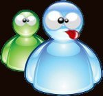
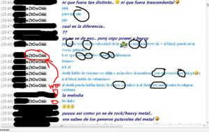

Idioma MSN
 De: La Frikipedia, la enciclopedia extremadamente seria.
De: La Frikipedia, la enciclopedia extremadamente seria.
| De la serie idiomas del mundo:
|
| Idioma MSN
|
| 
|
| Hablante típico de Idioma MSN
|
|
| Familia
|
Mesenyer
|
| Número de hablantes
|
6 billones de analfabetos
|
| Hablado en
|
Cada rincón del Interné
|
| Hablado por
|
Vagos y personas normales
|
| Artificial o Natural
|
Muy artificial
|
| Nivel de frikismo
|
Básico
|
| Dificultad
|
La misma para armar al señor cara de papa
|
| Truqui para dominarlo
|
Practica en Interné
|
| Máximo exponente
|
Cybernauticos grado 1
|
| Ejemplo de uso
|
"Ola, toy perandote aca en la house pa que me violes, ok thx bye"
|
El idioma MSN es un lenguaje primitivo, primo-hermano del HOYGAN, que data del año 2000 D.C. y consta de las mismas letras que los lenguajes occidentales convencionales pero la mayor peculiaridad de este lenguaje es que no tiene reglas ortográficas ya que se puede escribir como se le venga en gana a uno, y aunque Cervantes se revuelque en su tumba, ya este idioma esta presente en cada uno de los usuarios del internets.
La mayoria de los frikis usa Messenger para copiar las tareas del colegio o para registrarse en comunidades de internet, por esto es que la mente friki es contagiada por este tipo de lenguaje inventado por los auto-denominados messengerianos.
Diccionario traductor Messengeriano (MSN) a Español Latino
Antes de seguir leyendo, te avisaremos que esto puede llegar a ser extenso si eres un Friki común, o sólo volverse aburrido, pero debes ser fuerte y atenerte a las consecuencias, y como precaución unos lentes de sol y pontelos para proteger tu vista de la escritura MESSENGERIANA.
Palabras comunes del Mésenller
Lamentablemente, existen mas de 100 millones de alternativas para hablar, pero solo mostraremos las mas comunes.
- "Ola; oli; olas; ule; ulep; wolas; holaz; olaaw; weenas; ulahp; wolahz; Ueenass": Estos
jeroglificos mensajes que puedes recibir de tus amigos o desconocidos, se refieren a un simple y llano "hola" o "¿qué tal?".
- "Ctt?; kmo tai?; coo tas?; ctm; cmu taz?; cmo ts?; como tas?": Estos
insultos mensajes amistosos se refieren a "¿cómo estás?".
- "K contai?; k hace?; q aci?; k ta hacendo?": Esto va referido a
interferir con tu vida personal saber que puedes contar.
- "Bnbn; bn; iem; iem; oka; ok; oks; bmbm; bnu": Cuando te digan esto después de haberles preguntado como estás, te están respondiendo que están bien.
- Si te dicen que están mal, simplemente están mal, ya que no hay forma conocida de decir que estás mal por MSN, ya que casi nunca te dicen que están mal, y si estan mal simplemente
se estaran cortando las venas te responderan con una carita triste y consecuentemente te cuentan o se desconectan. Pero nunca, lease bien, NUNCA te diran que estan mal. En caso de pasar significa un cuelgue de Hasefroch y del Interné en si.
- "Oe; oie; eii": Estos mensajes
subliminales se refieren a "oye, hey, etc." para poder pedir tu atencion un momento.
- "Q, k, ke, kep , qe, qu": En esta manera de
ofenderte expresarse, la gente quiere decirte "que" con un lenguage que vale caca amistoso.
- "Qiero, kero, kelo, kiero, qero, quielo": Esta es la forma
más estupida en la que las personas quieren decirte "quiero", o sea, te estan obligando a que hagas algo.
- "Chau, Xau, Xao, Shau, Shao, Dew, dw, Chavela, Shavela, Zhao, Zhau, saw, zHaUhWxXx": Estas
estupideces letras, quieren decirte "Chao" o "Adios" ,es decir, que quieren que te vayas a la mier** que les dejes de hablar
- "Weno, mueno, bno, bn , oki , oka, = quieren decir que esta bien o bueno.
- "Aki, aky, acua, aya, en el
puto serro , por ayi: esto es el insulto mas imbecil es conocido por ser la forma de decirte estoy lo mas lejos posible de ti
- "nop, sip, siiiiiiii,see, nah, na" Se usarán
subnormalmente para decirte "Sí o No". Nadie en la historia ha determinado por qué la gente en vez de decir sí, dice sip. Pero la gente lo hace, y tú lo has hecho, no seas mentiros@...
 Conversación típica del MSN, pincha para verla
Más Adelante
Te van a empezar a contar que les pasa algo, sea bueno o malo, aunque a ti no te importe, debes escucharlo, es decir, leer lo que escribe con mucha atención.
La historia puede tener muchas palabras muy distintas, asi que, en vez de enumerar palabras amontonadas que sean lo mismo, iremos una por una, lentamente:
- K lata o k plancha: Que tienen aburrimiento o flojera, por algo que les sucedió.
- Kachai?: Te preguntan si has entendido, si no te has enterado de una mierda debes decirle que
te lo quieres tirar lo has entendido todo perfectamente (aún no habiendo entendido una mierda) para que se calle y no empiece otra vez.
- Naaaa: Te dicen "No", de manera sarcástica.
- Seeee: Te dicen "Si" de manera sarcástica.
- No: Te dicen que "No"
- Si: Te dicen que "Si" xD
- Nu se: Te dicen que no saben algo que les preguntas, o no saben como se sienten.
- akjkajakjakjakjkajkkj: Generalmente, significa "Ja, ja, ja!", ya que es muy dificil escribirlo con lentitud, oprimen la letra jota y la letra a, y van tan rapido que pasan a llevar la letra k, y entre las 3 se mezclan sin sentido.
- Buuuu: Significa "¡Ay que mal!"
- Meeee: Significa "nada que ver, estás drogado"
- wn!: Te dicen un garabato, si tienes suficiente imaginación, sabrás cual es, o si no dile que te lo diga entero y te sentirás mal.
- ctm: Es un garabato de alto calibre, si te lo dicen, te aconsejamos dejarlo sin admisión o decirle ctrpm (eso le dolera), aunque es lo más gallina que puedes hacer por Interné.
- Si te llega un mensaje con más iconos que palabras: Oprime sobre cada uno con el botón derecho y oprime en "agregar", para leer lo que dice en palabras humanas (en cristiano) ,luego oprime en cancelar, para no tener tantos iconos como él/ella/eso o lo que sea.
- ブけひきおlunca: Pues, eso no lo sabe ni la
wikipedia frikipedia, ya que bien, a ver... ¿porque mejor no le preguntas a alguien que hable en este idioma, no?
- WTF: utilizado comunmente para referirse a "what the fuck", por ejemplo:"Hi (hola), cmtaz? (¿cómo estás?), bnbn y tu? (Bien y tu), aki pz pilando (aqui pues, estudiando), WTF!!! (What the fuck!!!) = que hace referencia a= ¿Qué coño haces estudiando?, se una persona normal. También hace referencia a: PILANDO??? QUÉ COÑO ES ESO???
- Xupalo: Esto lo ocupan cuando quieren que le hagas un GRAAAANNNNN favor... O canis en su más espléndida amabilidad. Una cosa más: Si conoces más formas no humanas e ilegibles para cualquiera, no dudes en agregarlas, así estarás ayudando a muchos que no usan este medio de comunicación en el que no se entiende mucho sin saber.
- chtm! : te dicen saludos... a
chinga tu madre...
- ptm! :
puta madre...
- omg : acrónimo de "oh my God" lo que significa "oh dios mio", aunque muchas veces en realidad significa: "me importa una mier**"
- lol : puede significar "me rio mucho" o "digo lol para que pienses que me ha hecho gracia pero en realidad me parece una gran gilipoll**"
- lmao : significa "me parto el culo" literalmente. puede que se esté despollando o que tengas que llamar al SAMUR.
¿Sabias que...
- ...el msn es mas utilizado que el telefono?
- ...cada vez que mandas un zumbido por el msn un chino se muere?
- ...los frikipedistas dicen que no pero todos usan msn?
- ...uno sabe q escribir i bien con mensenger sierto q sip, xd?
- ...me ahore tiempo escribiendo msn en vez de messenger?
- ...tus padres piensan que estás siendo controlado por tu computador? cuando en realidad estas usando msn?
- ...que hay padres que usan el msn?... si... unos cuantos (generalmente usan el idioma humano)...
- ...que le dicen chatear al msn cuando en realidad no es un chat?
Vease tambien
Autor(es):
- Frikiman
- Azulejos
- ANorMaliTa
- Arlan 1313
- Dipa amm
- Veni Vidi Vici
- THE KYD
- Mariposa
- Antrax69
- Bryan
Frikipedia 2005-2016, Licencia
GFDL 1.2 - Extraído por FrikiLeaks